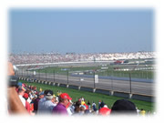
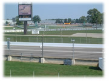

| ..*..*.. 2002年10月6日(日) 晴れ ..*..*..  インディアナポリスにF1を見に行ってきました。私がF1を好きだということは、知る人ぞ知る...というより、ほとんどどなたもご存じないと思います。好きになったのは2年前で、夫とその友達の影響です。でも、今では私の方が好きなくらいで、今年(2002年)は全部見ています。 F1は見どころがたくさんあります。簡単に説明しますね。 コンストラクターと呼ばれるチームが11チームあり、各チームには２人のドライバーがいます。この22人が3月から10月までの間に世界中の17か所を移動して各地で早さを競います。今年はオーストラリアに始まり、マレーシア、ヨーロッパ各地、ブラジル、カナダ、アメリカ(インディアナポリス)を巡回し、最後が来週の鈴鹿（日本グランプリ）です。 グランプリでは決められたサーキットを何周もします。１時間以上、200キロ300キロのスピードで走ります。インディアナポリスでは、全長4192mを73周しました。 こんなスピードでこれだけの距離を走り続けるためには、車はそれに耐えうるものが必要です。各チームはテストを重ね、最高の車を持ってくるわけです。ものすごくお金のかかるスポーツです。だからどこのチームもスポンサーは重要で、お金の工面ができずに参加できなくなってしまうチームが出てきたりもします。  そんなに最速で走るのに、競うのは秒単位です。10秒の差が出てしまうとしたら、それは差がありすぎなのです。 各グランプリには、フリー走行（金曜日、土曜日）と予選（土曜日）があります。予選では、各ドライバーは決められた時間内にコースを周ります。1周のタイムが一番早かった人がポールポジションをとり、決勝で一番前からスタートします。今回はフェラーリのミハエル・シューマッハでした。以下、早い順に並びます。 F1(車のレース)の醍醐味は、ピットストップがあることでしょうか。これだけ長い間、走るわけですから、１度のガソリンで走りきることはできないため給油をします。また、ガソリンが少ない方が全体が軽くなって早く走れるので、もともとギリギリのガソリンを積んでいるそうです。軽い車で走り続けるために、給油は１度(1ストップ)だけでなく、2度（2ストップ）するドライバーもいます。 ドライバーと、給油やタイヤ交換をするピットクルーは無線で連絡をとっていて、ピットに入るタイミングも絶妙です。各チームにはドライバーが２人いるわけですから、計算なしで勝手に入れることはできません。ガソリンを入れるときには普通、タイヤの交換もします。これを全部やって10秒以内で終わってしまうんです。ときどきミスがあって20秒30秒かかってしまうと、順位も大きく変わってきます。 順調に走っていた車が、いきなり止まってしまうこともよくあります。他の車とぶつかってしまうこともあります。ごくたまに大きな事故になったりすることもありますが、ひと昔前のF１に比べると安全になってきているそうです。FIA(国際自動車連盟)が早くなりすぎることに制限をつけていて、レース全体が安全になってきているそうです。 F1は車のレースの最高峰と言われています。F3, F3000などでいい成績をあげた人やテストドライバーを経た最高のドライバーが争うレースです。技術はほとんど横一列、タイムもほとんど変わらない、だから、F1って精神力のレースだと私は感じます。プレッシャーをかけたり、作戦をたてたり、計算したり、ドライバーもチームも常に寸分の狂いも無く頭をつかっています。そんなところが、面白いとこじゃないかなと思います。 さて、この年間を通して戦うF1の順位は、決勝で買った順に６位までポイントがつきます。ドライバーズポイントは各ドライバーに、コンストラクターポイントはチームに与えられます。このポイントでその年の順位が決まるわけです。 今年のF1は、ミハエル・シューマッハとバリチェロのいるフェラーリが圧倒的に強く、７月でミハエルの優勝が、今回のインディアナポリスでバリチェロの2位が決定して、コンストラクターではフェラーリの優勝が決まっています。 今年の１位2位が決まってしまっても、まだまだ３位以降は目がはなせません。それに、ジョーダンにいる佐藤琢磨はまだ１ポイントもとっていませんが、素人目に見てもどんどんよくなっているし、どれくらいがんばってくれるかが見ものです。 これが今のところの私の見解です。次の日記ではインディアナポリスでのことを書きますね。 |